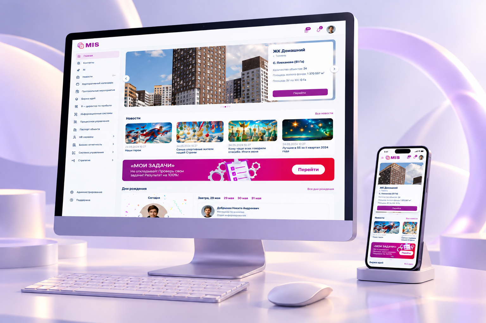
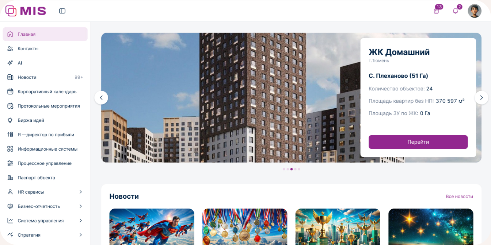
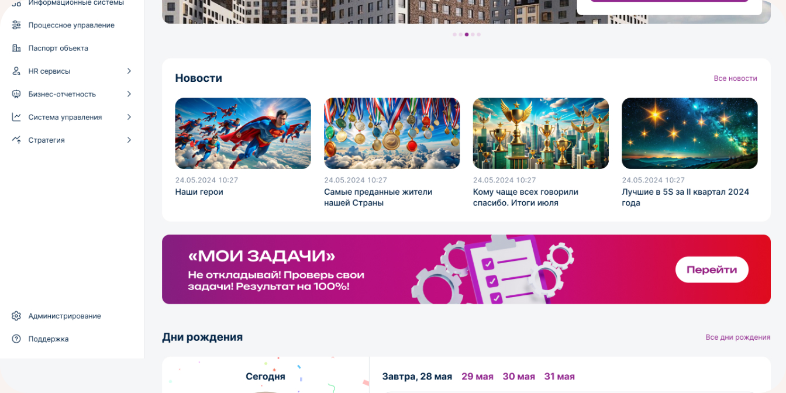
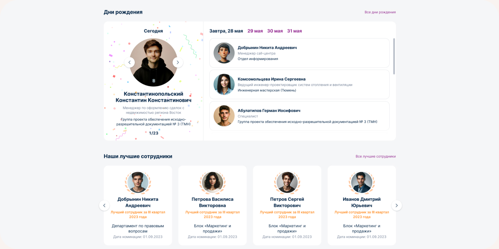
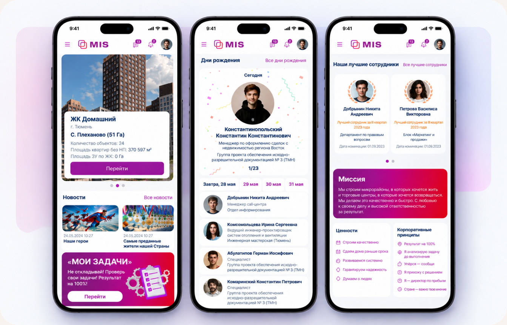

02
MIS — редизайн
корпоративного
портала
Провёл редизайн корпоративного портала для сотрудников: переработал информационную архитектуру, навигацию и ключевые разделы, а также спроектировал адаптивные версии с фокусом на мобильные сценарии.

01
Контекст
На основе данных опросов выяснил, что главная страница — основной вход сотрудников в цифровые продукты компании. При этом важная информация была плохо структурирована и терялась среди второстепенного контента. Задача — сделать главную страницу полезной с первого взгляда и упростить доступ к ключевым сервисам и информации.

02
Что было сделано
Провёл полный редизайн корпоративного портала: переработал информационную архитектуру и навигацию, обновил ключевые сценарии и контентные блоки, а также спроектировал адаптивные версии с фокусом на мобильные устройства.
-

Анализ и аудит
Проанализировал существующий портал и переработал информационную архитектуру с учётом основных сценариев сотрудников
-
Навигация
Упростил доступ к цифровым продуктам и разделам портала, сделал структуру понятнее и быстрее для поиска нужной информации
-
Главная страница
Пересобрал главный экран: добавил новости, дни рождения, проекты и обновил блок «Лучшие сотрудники»
-
Адаптив и Mobile
Спроектировал адаптивные версии портала с отдельным вниманием к мобильному сценарию и приоритетам информации.
03
Главная как точка входа
Перестроил главную страницу вокруг сценариев, которые сотрудники используют чаще всего. Навигация, новости, проекты и персональные блоки получили понятную визуальную иерархию и стали доступны без поиска по порталу.

04
Контент и персонализация
Добавил персональные и социальные сценарии, которые помогают сотрудникам быстрее находить актуальную информацию и взаимодействовать с коллегами. Блок «Дни рождения» получил более заметное и структурированное представление, а «Лучшие сотрудники» — новую визуальную подачу, чтобы информация о достижениях не терялась среди других блоков.

05
Мобильная версия
Отдельное внимание уделил мобильному сценарию. Руководители компании активно используют портал с мобильных устройств, поэтому ключевые сценарии и контент пришлось адаптировать не только технически, но и с точки зрения приоритетов информации.
